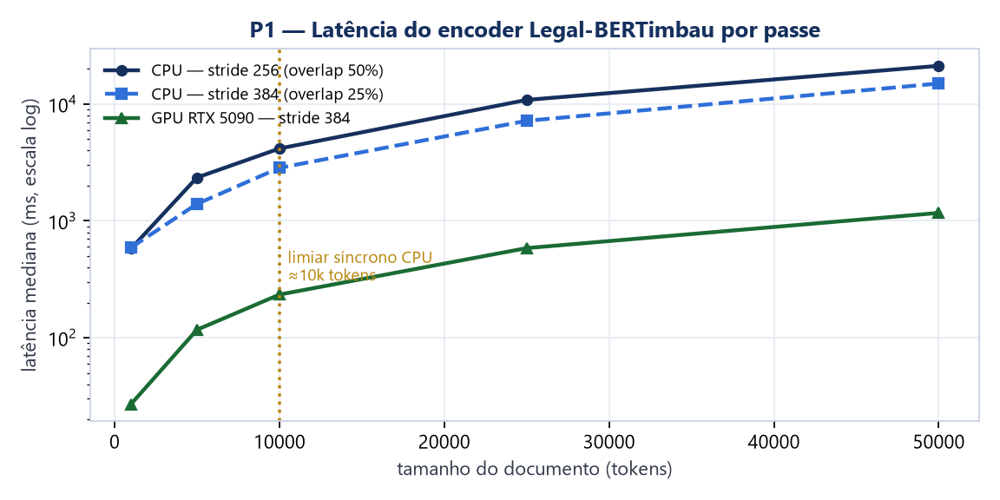
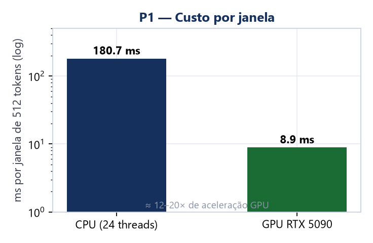
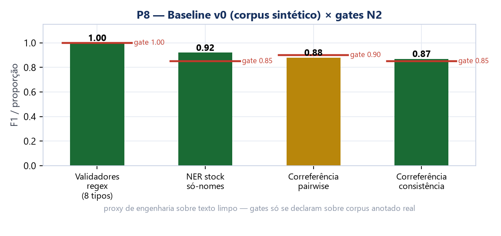

| 1. Sumário executivo |
| 2. Contexto e problema |
| 3. Visão geral da arquitetura |
| 4. Decisões arquiteturais (ADRs 0000–0012) |
| 5. Arquitetura de segurança |
| 6. Validação — provas executadas e resultados |
| 7. Riscos e limitações honestas |
| 8. Trabalho restante e roadmap |
| 9. Inventário documental |
Este relatório consolida o estado da arquitetura do módulo de anonimização de documentos judiciais com preservação de coerência processual, projetado como nó soberano edge por organização — sem dependência de nuvem em runtime — exposto via API REST/OpenAPI, com NLP determinístico e localmente hospedado, mapeamentos cifrados por caso e trilha de auditoria à prova de adulteração.
O desenho foi registrado em 13 decisões arquiteturais (ADRs 0000–0012), passou por revisão de segurança em 16/10/2026 que fechou 11 lacunas (documentadas como emendas), e teve suas premissas mecânicas testadas em 7 provas arquiteturais (spikes) — todas aprovadas: latência de inferência, isolamento de rede, motor simbólico de correferência, trilha de auditoria, esquema criptográfico do cofre, normalização anti-evasão e autenticação offline.
| Dimensão | Estado | Evidência |
|---|---|---|
| Coerência do desenho | VALIDADO | 13 ADRs + especificação + v1.3 consistentes |
| Segurança (desenho) | REVISADO | 11 lacunas fechadas por emendas em 16/10 |
| Mecanismos (spikes) | 7/7 PROVADOS | relatório em spikes/P1–P7_resultado.md |
| Baseline de métricas | MEDIDO | P8: harness + corpus v0 — §6.1 |
| Métricas científicas (corpus real) | PENDENTE | depende de corpus (Etapa 3+) |
| Validação institucional | PENDENTE | Etapa 11, no órgão |
Documentos judiciais contêm dados pessoais e sensíveis cuja divulgação irrestrita é vedada (LGPD; art. 189 do CPC — sigilo para menores, segredo de justiça; Resolução CNJ 615/2025). Anonimizar "na unha" destrói a utilidade: nomes substituídos de forma inconsistente quebram a compreensão de quem é parte, quem testemunhou, quem é parente de quem e em que ordem os fatos ocorreram.
O módulo resolve essa tensão com duas propriedades inseparáveis:
Restrições do domínio que moldaram todas as decisões: operação em rede isolada do órgão (soberania), auditabilidade verificável (evidence-grade), nenhuma IA generativa (determinismo exigido para revisão jurídica), e métricas de privacidade/utilidade pré-registradas.
| Anonimização | Pseudonimização | |
|---|---|---|
| Reversibilidade | Irreversível — destruição cerimonial da chave HMAC do caso (ADR-0012) | Reversível — mapeamento cifrado AES-GCM, DEK por caso |
| Pseudônimo | consistência por caso via
HMAC(entidade ∥ case_id) |
idem + mapeamento legível no cofre |
| Caso de uso | publicidade, dados abertos | compartilhamento com reversão autorizada (break-glass) |
Nó edge autocontido por organização: imagem OCI única + Docker
Compose (api, nginx, Postgres, Vault) sobre redes
internal: true — egress deny-all por ausência de
rota (provado, §6-P2). A única superfície externa é o nginx com
TLS 1.3 + mTLS. Modelos de NLP viajam assinados na imagem
(safetensors only), sem download em runtime.
| ADR | Decisão | Por quê / alternativa descartada |
|---|---|---|
| 0000 | Regra de maturidade 3 anos | stack só com componentes ≥3 anos estáveis — nó do setor público não é lugar de tecnologia quente |
| 0001 | Detecção híbrida: BERT-legal NER + regex/validadores + gazetteers | NER puro falha em identificadores estruturados; regex puro falha em contexto; híbrido cobre os dois modos de falha |
| 0002 | Correferência por motor simbólico "Linked Entities" | determinístico = auditável e explicável (exigência jurídica); redes de correferência neural não são verificáveis item a item. Risco: cobertura do long tail — spike P3 avaliou: plausível |
| 0003 | FastAPI + OpenAPI gerada de código | contrato testável por Schemathesis; async para o batch; sync no path de docs pequenos |
| 0004 | Postgres: cofre de mapeamentos + trilha hash-chained com âncora externa | emenda 16/10: HMAC agora HMAC(e∥case_id)
— antes correlacionava entidade entre casos; âncora externa
obrigatória — sem ela, rewrite total da trilha era
indetectável (provado em P4) |
| 0005 | Vault Transit: KEK no Vault, DEK por caso (envelope) | banco sozinho não abre nada; Vault sozinho não tem os dados — separação dados↔chaves |
| 0006 | OIDC/JWT validado offline via JWKS cacheado; RFC 8705 + TTL curto obrigatórios | emenda 16/10: sem introspecção possível (isolamento), token vazado só vence por TTL — por isso minutos, e cert-bound para não ser portável |
| 0007 | Rede isolada: VLAN + egress deny-all + túneis de suporte | emenda 16/10: deny-all cobre DNS e IPv6 (canais de exfiltração); API não binda host; ciclo de vida de cert mTLS via CA interna |
| 0008 | Empacotamento: imagem OCI única + Compose | emenda 16/10: política safetensors-only (peso de modelo não é código executável); hardening baseline — rootfs read-only, cap_drop ALL, no-new-privileges, não-root, seccomp |
| 0009 | Toolchain TDD: pytest + hypothesis + schemathesis + syft/grype | emenda 16/10: grype adicionado como gate de CVE sobre o SBOM — inventário sem varredura não é controle |
| 0010 | Verificação residual + escore de confiança | re-scan com detector de erro independente;
risco zero é inatingível — mede-se e sinaliza-se o residual
(risk_score, review_flags,
needs_review) |
| 0011 | Zero IA generativa | encoders discriminativos apenas; elimina classes inteiras de vulnerabilidade (instrução embutida, memorização regurgitável); pseudo-perplexidade via masked-LM preserva o detector |
| 0012 | NOVO — Ciclo de vida de chaves | unseal Shamir distribuído por papéis (ninguém destranca sozinho); bootstrap secret-zero via arquivo montado; destruição cerimonial de chave HMAC por caso = o evento que materializa a irreversibilidade |
| Anel | Controle | Estado |
|---|---|---|
| Rede | egress deny-all por ausência de rota
(internal:true), DNS sem upstream, IPv6, binding
restrito — só nginx expõe |
PROVADO (P2) |
| Transporte | TLS 1.3 + mTLS no nginx; CRL/vida-curta para revogação em isolamento | desenho; implantação |
| Identidade | OIDC offline via JWKS cache; RFC 8705 cert-bound; TTL em minutos | PROVADO (P7, JWT) |
| Dados | AES-GCM por caso (Vault Transit), HMAC por caso, banco não decifra nada | PROVADO (P5) |
| Integridade | hash-chain + âncora externa assinada; pgaudit; audit devices do Vault | PROVADO (P4) |
| Pipeline | guardrails + estágio-0 Unicode + supressão conservadora + re-scan independente | PROVADO (P6, parcial) |
ulimit -c 0), respostas de erro ou
trilha — a trilha guarda hashes, não conteúdo.Sete spikes N1 foram executados em 16/10/2026 (artefatos em
spikes/). Cada prova tinha hipótese falsificável e barra
de aprovação pré-definida.
| # | Prova | Método | Resultado |
|---|---|---|---|
| P1 | Latência encoder em CPU | Legal-BERTimbau-base 109M, janelas 512, docs 1k–50k tokens, batch=1 | PROVADO ~110–180ms/janela; doc 10k ≈ 3–4s por passe; doc 50k ≈ 15–21s → síncrono ≤~10k, batch DEFINIDO acima |
| P1b | Mesmo em GPU | RTX 5090, torch cu128 | PROVADO ~9ms/janela (12–20×); 50k = 1,75s → síncrono universal; decisão de hardware do edge vira trade-off institucional |
| P2 | Isolamento internal:true |
Compose mínimo; probe de egress HTTP/DNS/ICMP/IPv6 + intra | PROVADO zero egress medido; intra-rede ok; DNS embutido resolve containers e recusa upstream (sem túnel DNS) |
| P3 | Motor simbólico de correferência | ~300 linhas de regras; 30 casos artesanais, 40 asserções | 100% — papel, apositivo, discurso, pronome+genero, possessivo, parentesco, honorífico, anti-merge; ambíguos/catáfora não vinculam (conservador). ≥0,90 plausível, corpus decide |
| P4 | Hash-chain + âncora externa | simula adulteração parcial e rewrite total | PROVADO — rewrite total só é pego pela âncora; emenda justificada por demonstração |
| P5 | HMAC por caso | HMAC(e∥c) × HMAC(e); destruição de K | PROVADO zero correlação transversal; pós-destruição nenhum HMAC reproduzível — oráculo de dicionário morre |
| P6 | Normalização Unicode | NFKC + invisíveis + homoglifos + traços; 19 baterias adversariais | 19/19 — achado real: NFKC não dobra U+2011→"-"; tabela de traços fechou o bypass de regex |
| P7 | Auth offline (JWKS cache) | Keycloak 26.4 dev-mode; client_credentials; JWKS em disco | PROVADO RS256+iss+exp validados sem IdP; TTL 120s; adulterado e issuer-falso rejeitados |


O harness spikes/p8_metricas.py implementa as fórmulas
pré-registradas de docs/metricas.md e mede os três
componentes reais sobre corpus_v0.jsonl (36 docs por
template, 252 entidades gold, offsets em caracteres):
| Componente | Medido | Gate N2 | Leitura |
|---|---|---|---|
| Validadores regex (8 tipos) | F1 = 1,00 | ~1,00 | caso limpo resolvido; recall sob ruído OCR é o teste real (E9, corpus degradado) |
| NER stock LeNER-Br — só nomes | F1 = 0,92 (R=1,00) | ≥ 0,85 | coverage de nomes já total no proxy — fine-tune foca tagset próprio e ruído, não detecção básica |
| Correferência — pairwise F1 | 0,88 | ≥ 0,90 | abaixo do gate por 2 pontos; o corpus expôs falha real (apositivo pós-parentesco) — corrigida, F1 subiu 0,80→0,88 |
| Correferência — consistência/entidade | 0,87 | ≥ 0,85 | acima do gate |

Escopo: proxy de engenharia sobre corpus sintético de templates — piso de dificuldade, não validade externa. O que já ficou provado estruturalmente: a divisão de trabalho híbrida do ADR-0001 aparece na medida (NER cobre nomes; papéis/pronomes são domínio do motor simbólico), e o gap ao gate de correferência está quantificado com classes de falha identificadas.
| Risco | Severidade | Mitigação no desenho |
|---|---|---|
| Correferência no long tail real (anáfora distante, OCR ruim, plural de papel, orações intercaladas) | Alta | P3 mostrou expressividade; corpus adversarial E9 decide;
review_flags absorve o residual conservador |
| Validade externa (corpus sintético × documentos reais) | Alta | amostras reais autorizadas — dependência externa, pedir cedo; métricas declaradas com escopo se negadas |
| NER F1 no tagset próprio | Média | ciclo normal de pesquisa; validadores regex cobrem identificadores estruturados independentemente |
| Latência no hardware do edge (24 cores no spike) | Média | re-rodar P1 no alvo; GPU no edge é opção medida (5,3s em 50k ×3 passes) |
| Operação humana de chaves (unseal, cerimônias) | Média | ADR-0012 prescreve quórum distribuído; validação em N3 |
| Insider com acesso legítimo (break-glass abusivo) | Média | endpoint ainda INDEFINIDO — exige desenho com jurídico: quatro-olhos, janela curta, justificativa na própria hash-chain |
| Item | Desbloqueia |
|---|---|
| Tagset + esquema de anotação | corpus e todas as métricas |
| Regra de merge de spans do janelamento | corpus avaliável (dado novo: stride 384) |
Fórmula residual_score + recall de correferência |
contrato de risco (pré-registro E1) |
| Política de pseudônimos + break-glass | utility score, /v1/reversal — com jurídico |
| Modelo de relações sujeito↔sujeito | coerência processual (P3 validou o formato REL) |
| Redis × rate limit em memória | compose de referência |
| Emendas de registro: batch/limiar/GPU | ADR-0003/0008 |
Corpus sintético → fine-tune → gates de CI: F1 NER ≥ 0,85 · correferência ≥ 0,90 + recall · reidentificação ≤ 5% · utility ≥ 0,85 (TAB adaptado) · latência-alvo pré-registrada.
TI do órgão sobe o compose sozinho; cerimônia de unseal por papéis distintos; avaliação de utilidade por usuários; medição de validade externa nas amostras autorizadas — iniciar o pedido de autorização imediatamente (maior lead time do projeto).
| Arquivo | Conteúdo |
|---|---|
docs/especificacao-tecnica.md |
especificação v1.x com emendas (12 estágios, RNFs, contrato) |
docs/adr/0000–0012 |
13 decisões com contexto, alternativas e emendas datadas |
docs/arquitetura-interativav1.3.html |
visualização interativa — 12 estágios, 13 ADRs, anéis de defesa, stack, riscos |
docs/plano-de-validacao.md |
checklist N1/N2/N3 com barras falsificáveis (4/6 N1 fechados ao estado atual) |
docs/relatorio-validacao.md |
consolidado de validação (antecessor deste relatório) |
docs/metricas.md |
pré-registro das métricas: fórmulas, convenções de span, gates N2 — mudança exige emenda datada |
spikes/ |
P1–P8: scripts executáveis, dados brutos (.jsonl), resultados (P*_resultado.md), artefatos P2 (compose+probe), corpus_v0.jsonl + gerador |